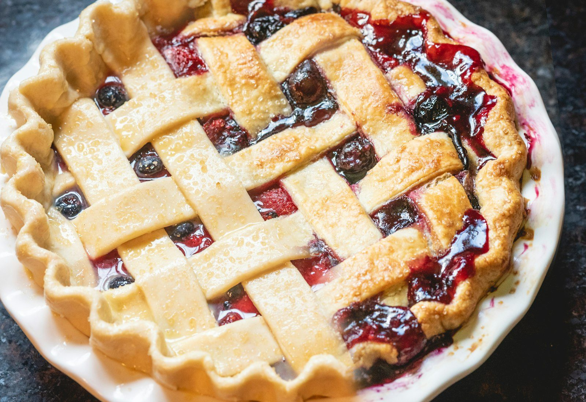
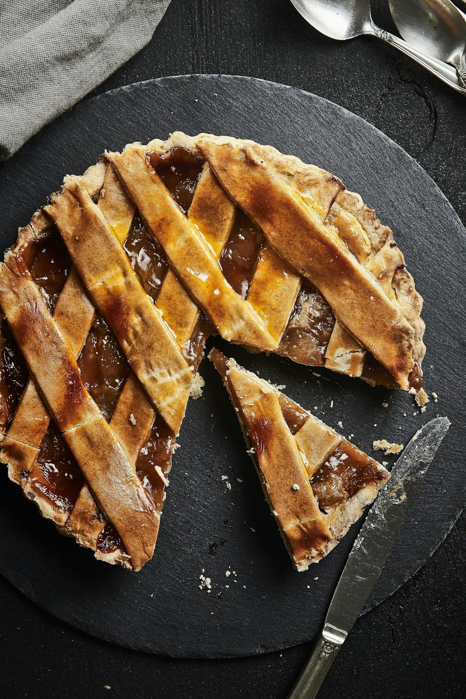
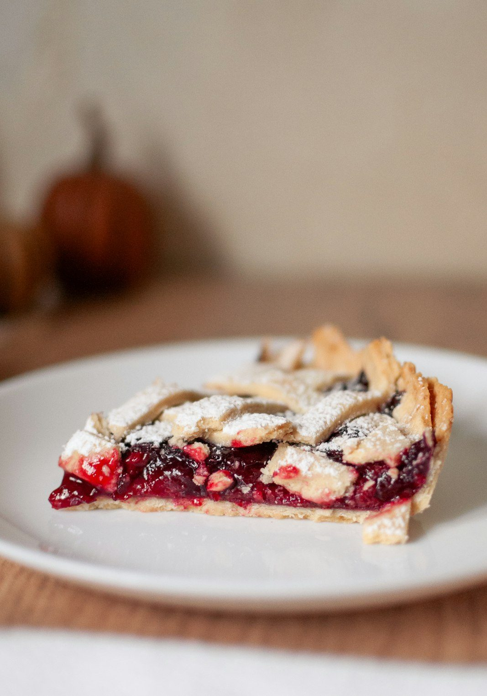
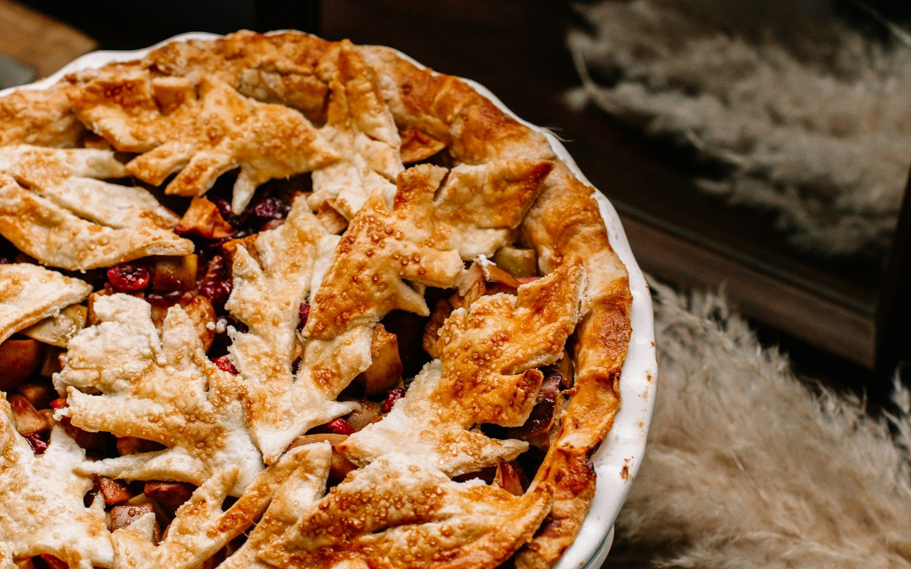
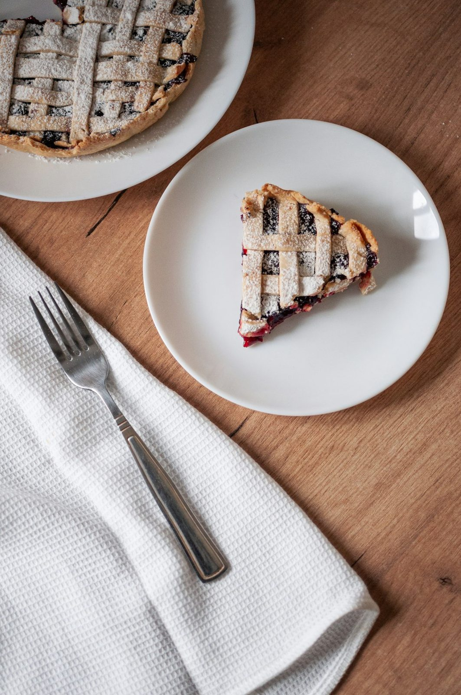
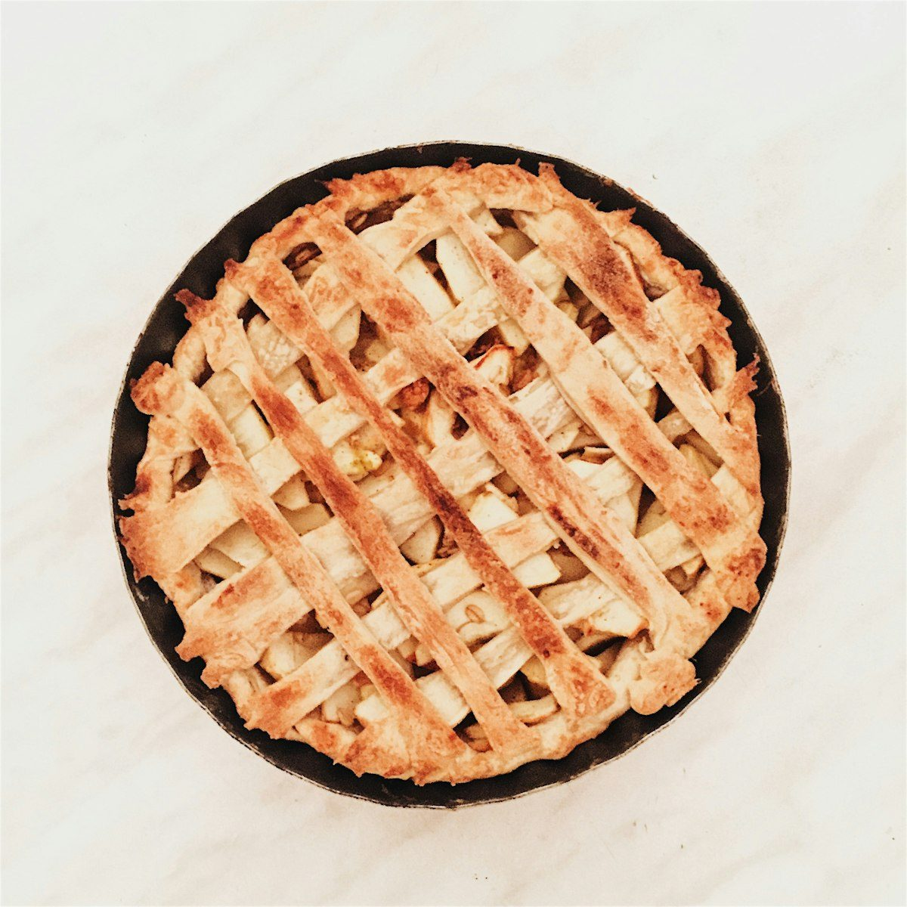
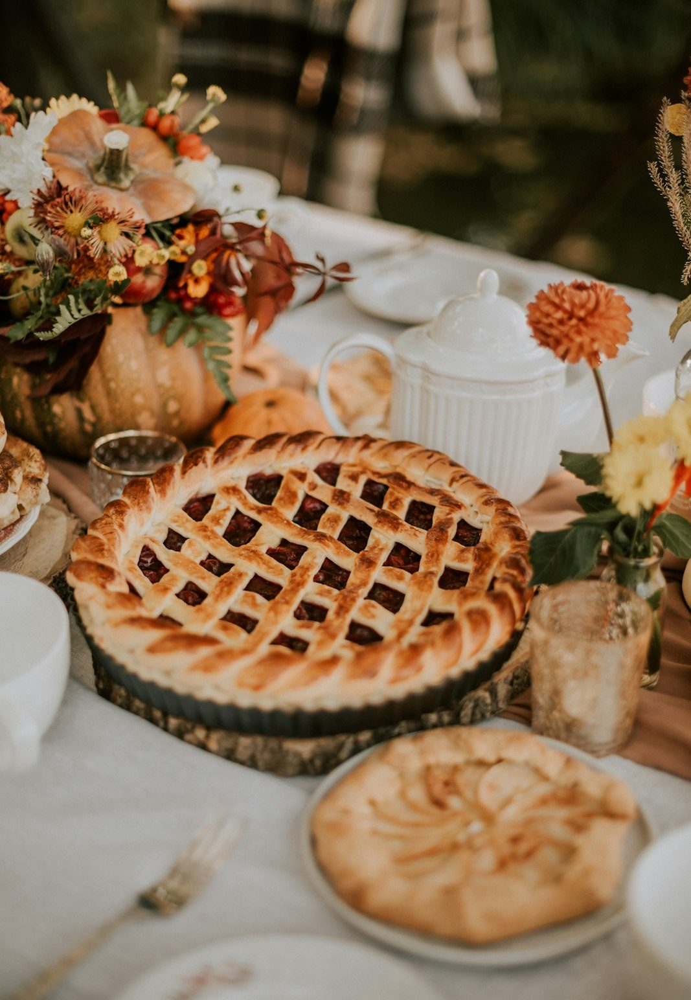

Heavenly pies on Main Street.
Miss Angel's Heavenly Pies is a pie bakery at 153 N Main St in Mount Airy. Stop in for pies, baked goods and sweets.
Open seven days a weekCall ahead to confirm.
Pies · Baked goods · Sweets


What we bake
Pies are in our name. We have baked goods and sweets as well.
Want to know what we have before you come? Call (336) 786 1537.
Open seven days a week.
Monday to Sunday on N Main St in Mount Airy. Call ahead to confirm.
- Mon
- Tue
- Wed
- Thu
- Fri
- Sat
- Sun




Find us on Main Street.
Stop in at 153 N Main St in Mount Airy, NC.
- Call(336) 786 1537
- Get directions153 N Main St, Mount Airy, NC
- Hours
Open seven days a week. Call ahead to confirm.